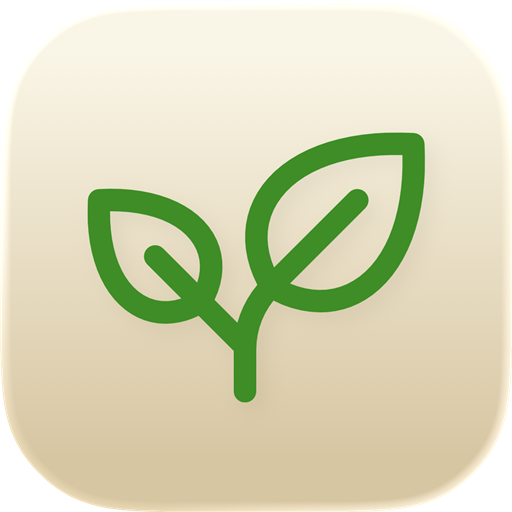

Turns a folder of Markdown notes into a fast, searchable class website you own.
A plantoir is a dibber — the simple hand tool that opens a hole at the right depth so a seedling can be set in and take root. This one does the same for teaching materials.
Write in Obsidian, preview locally, publish when you're ready. No content management system, no fifteen clicks to post a handout, and no platform holding your work hostage when you move schools.
Version 1.0.0 · Released August 2026 · All releases
Plantoir is a friendly wrapper around Quartz, which Jacky Zhao builds and gives away for free. If you end up using Plantoir regularly, please consider sponsoring him on GitHub — it is his work that makes all of this possible.